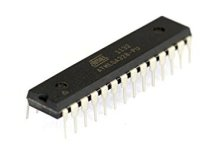
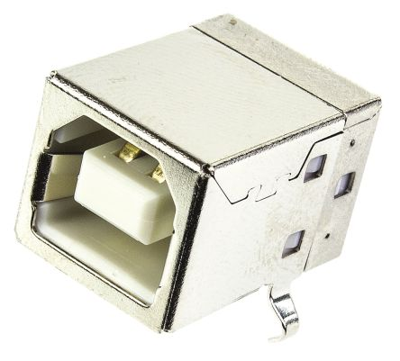
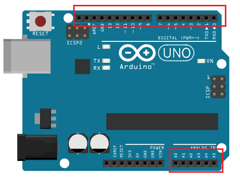
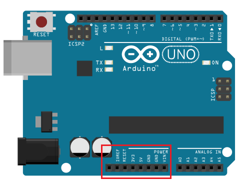
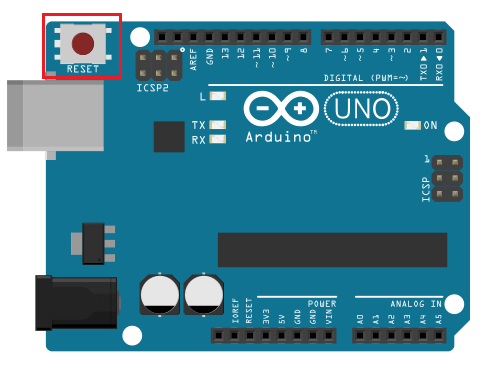
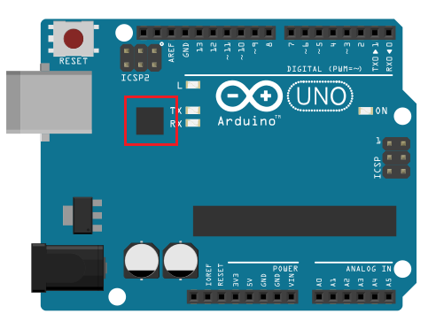
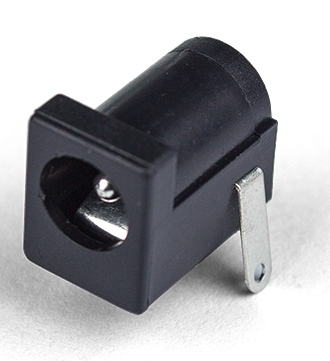

Clique sobre algum dos componentes para saber mais sobre ele.

Esse é o cérebro do Arduino. Um computador inteiro dentro de um pequeno chip. Este é o dispositivo programável que roda o código que enviamos à placa.
Existem várias opções de marcas e modelos de microcontroladores, nessas placas foram adotados os microcontroladores da Microchip, que inicialmente eram produzidos pela Atmel, mas especificamente a linha ATmega. O modelo UNO, por exemplo, usa o microcontrolador ATmega328.
Conecta a placa ao computador. É por onde o computador e o Arduino se comunicam com o auxílio de um cabo USB, além de ser uma opção de alimentação da placa.
Pinos que podem ser programados para agirem como entradas ou saídas fazendo com que o Arduino interaja com o meio externo. O UNO R3 possui 14 portas digitais (I/O), 6 pinos de entrada analógica e 6 saídas analógicas (PWM).
Fornecem diversos valores de tensão que podem ser utilizados para energizar os componentes do seu projeto. Devem ser usados com cuidado, para que não sejam forçados a fornecer valores de corrente superiores ao suportado pela placa.
Botão que reinicia a placa para as configurações originais.
Para que o computador e o microcontrolador conversem, é necessário que exista um chip que traduza as informações vindas de um para o outro. Os LEDs TX e RX acendem quando o Arduino está transmitindo e recebendo dados pela porta serial respectivamente.
Responsável por receber a energia de alimentação externa, que pode ter uma tensão de no mínimo 7 Volts e no máximo 20 Volts e uma corrente mínima de 300mA. Recomendamos 9V, com um pino redondo de 2,1mm e centro positivo. Caso a placa também esteja sendo alimentada pelo cabo USB, ele dará preferência à fonte externa automaticamente.
Indica se a placa está energizada.

LED conectado ao pino digital 13.